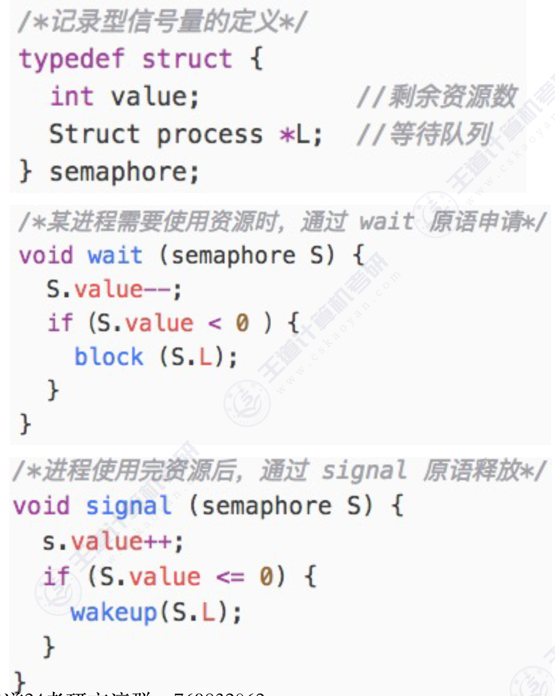

进程同步和互斥
进程同步和互斥
什么是进程同步
进程具有异步性特征。
进程异步：各并发执行的进程以各自独立的、不可预知的速度推进。
进程同步：在多进程并发执行的环境下，通过特定机制协调进程间的执行顺序，以避免因资源竞争或协作需求导致的数据不一致或逻辑错误。
操作系统需要提供进程同步机制来解决异步问题。
什么是进程互斥
进程并发需要共享资源的支持。各个并发执行的进程不可避免的需要共享一些资源（比如内存，又比如打印机、摄像头这样的I/O设备）。

我们把一个时间段内只能有一个进程使用的资源叫做临界资源。
对临街资源的访问，必须互斥的进行。互斥，亦称间接制约关系。进程互斥指当一个访问某临界资源时，另外想要访问该临街资源的进程必须等待。当前访问临临界资源的进程访问结束，释放该资源后，另一个进程才能去访问临界资源。
对临界资源的互斥访问，可以在逻辑上分为如下四个部分：

注意：
- 临界区是进程中访问临界资源的代码段。
- 进入区和退出区是负责实现互斥的代码段。
- 临界区也可称为临界段。
为了实现对临界资源的互斥访问，同时保证系统整体性能，需要遵循以下原则。
- 空闲让进：临界区空闲时，可以允许一个请求进入临界区的进程立即进入临界区。
- 忙则等待：当已有进程进入临界区时，其他试图进入临界区的进程必须等待。
- 有限等待：对请求访问的进程，应保证能在有限时间内进入临界区（保证不会饥饿）
- 让权等待：当进程不能进入临界区时，应立即释放处理机，防止进程忙等待。
进程互斥软件实现方法
单标志法
算法思想：两个进程在访问完临界区之后会把临界区的权限转交给另一个进程。也就是说每个进程进入临界区的权限只能被另一个进程赋予。

举例：若turn的初始值为0
- 进程
P0上处理机运行，在while(turn != 0)没有阻塞，进程P0访问临界资源。 - 此时发生进程调度，进程
P1上处理机运行。 - 进程
P1在while(turn == 0)处阻塞，不能进入临界区。 - 此时发生进程调度，进程
P0上处理机运行，进程P0访问临界区资源结束。进程P0将turn = 1后退出。 - 此时发生进程调度，进程
P1上处理机运行。 - 进程
P1在while(turn != 1)没有阻塞，进程P1访问临界资源。
该算法只能实现同一时刻最多允许一个进程访问临界区。只能按P0 -> P1 -> P0 -> P1 -> …这样轮流访问。那么虽然此时临界区空闲，但是并不允许P1访问，因此，单标志法的主要问题是：违背空闲让进原则。
双标志先检查法
算法思想：设置一个布尔型数组flag[]，数组中各个元素用来标记各进程想进入临界区的意愿，比如flag[0] = ture意味着0号进程P0现在想要进入临界区。每个进程在进入临界区之前先检查当前有没有别的进程想进入临界区，如果没有，则把自身对应的标志flag[i]设为true，之后开始访问临界区。

举例：
- 进程
P0上处理机运行，在while(flag[1])没有阻塞。——执行完了① - 此时发生进程调度，进程
P1上处理机运行。进程P1在while(flag[0])没有阻塞。——执行完了⑤ - 此时发生进程调度，进程
P0上处理机运行。进程P0执行flag[0] = true。——执行完了② - 此时发生进程调度，进程
P1上处理机运行。进程P1执行flag[1] = true。——执行完了⑥
此时我们发现P1和P0进程都进入了临界区！！因此双标志先检查法的主要问题是：违反忙则等待原则。原因在于，进入区的进程和上锁两个处理不是一气呵成的。检测后，上锁前可能发生进程切换。
双标志后检查法
算法思想：双标志先检查法的改版。前一个算法的问题是先检查后上锁，但是这两个操作又无法一气呵成，因此导致了两个进程同时进入临界区的问题。因此，人们又想到先上锁后检查的方法，来避免上述问题。

举例：
- 进程
P0上处理机运行，执行flag[0] = true。——执行完了① - 此时发生进程调度，进程
P1上处理机运行。执行flag[1] = true。——执行完了⑤ - 此时发生进程调度，进程
P0上处理机运行。进程P0在while(flag[1])阻塞——执行完了② - 此时发生进程调度，进程
P1上处理机运行。进程P1执行while(flag[0])。——执行完了⑥
此时我们发现P1和P0进程都阻塞在临界区外面！！因此双标志后检查法虽然解决了忙则等待问题，但是违背了空闲让进和有限等待。会因个进程都长期无法访问临界资源二产生饥饿现象。两个进程都争着想进入临界区，但是谁也不让谁，最后谁都无法进入临界区。
Peterson算法
算法思想：结合双标志法、单标志法的思想。

举例：
- 进程
P0上处理机运行，执行flag[0] = true。——执行完了① - 此时发生进程调度，进程
P1上处理机运行。执行flag[1] = true。——执行完了⑥ - 此时发生进程调度，进程
P0上处理机运行。进程P0在turn = 1阻塞——执行完了② - 此时发生进程调度，进程
P1上处理机运行。进程P1执行turn = 0。——执行完了⑦ - 此时发生进程调度，进程
P0上处理机运行。进程P0执行while(flag[0] && turn == 1)进入临界区。——执行完了③ - 此时发生进程调度，进程
P0上处理机运行。进程P0执行while(flag[1] && turn == 0)阻塞在临界区之外。——执行完了⑧
Peterson算法用软件方法解决了进程互斥问题，遵循了空闲让进、忙
则等待、有限等待三个原则，但是依然未遵循让权等待的原则。Peterson算法相较于之前三种软件解决方案来说，是最好的，但依然不够好。
互斥锁
解决临界区最简单的工具就是互斥锁。一个进程在进入临界区时应获得锁；在退出临界区时释放锁。函数acquire()获得锁，而函数release()释放锁。
每个临界区有一个布尔变量available，表示锁是否可用，如果可用，调用acquire()会成功，而锁不再可用。当一个进程获取不可用的锁时，会被阻塞，直到锁被释放。

acquire()和release()的执行必须是原子操作，因此互斥锁通常采用硬件机制来实现。需要连续循环忙等的互斥锁，都可称为自旋锁。
特性：
- 需忙等，进程时间片用完才下处理机，违反“让权等待”
- 优点：等待期间不用切换进程上下文，多处理器系统中，若上锁的时间短，则等待代价很低
- 常用于多处理器系统，一个核忙等，其他核照常工作，并快速释放临界区
- 不太适用于单处理机系统，忙等的过程中不可能解锁

进程互斥硬件实现方法
中断屏蔽方法
利用开/关中断指令实现（与原语实现的思想相同，即在某进程开始访问临界区到访问结束为止不允许被中断，也就不允许发生进程切换，因此也不可能方式两个同时访问临界区的情况）
1 | 开中断 |
优点：简单、高效
缺点：不使用于多核处理机；只适用于操作系统内核进程，不适用于用户进程（因为开关中断指令只能运行在内核态，这组指令如果让用户随便使用会危险）
TestAndSet指令
简称TS指令有时也称为TestAndSetLock指令。TSL指令使用硬件实现的，执行过程中不允许被中断，只能一气呵成。以下使用C语言描述的逻辑。

若刚开始lock是false，则TSL返回的old值为false，while循环条件不满足，直接跳过循环，进入临界区。
若刚开始lock是true，则执行TLS后old值返回true，while循环条件满足，会一直循环，直到当前访问临界区的进程在退出区进行解锁。
优点：实现简单，TSL指令把上锁和检测操作用硬件的方式变成了一气呵成的原子操作。
缺点：不满足让权等待原则，暂时无法进入临界区的进程会占用CPU并循环执行TSL指令，从而导致忙等。
swap指令
Swap指令时通过硬件实现的，执行的过程不允许被中断，只能一气呵成。以下使用C语言描述的逻辑。

逻辑上看和TSL指令并没有太大区别，都是先记录下此时临界区是否已经被上锁，再将上锁标记lock设置为true，最后检查old，如果old为false则说明没有别的进程对临界区上锁，即可跳出循环，进入临界区。
优点：实现简单，无需想软件实现方法那样严格检查是否会由逻辑漏洞；适用于多处理机环境。
缺点：不满足让权等待原则，暂时无法进入临界区的进程会占用CPU并循环执行TSL指令，从而导致忙等。
信号量机制
信号量：其实就是一个变量（可以是一个整数，也可以是更复杂的记录型变量），可以用一个信号量来表示系统中某种资源的数量。比如：一台打印机，就可以设置一个初值为1的信号量。
一对原语：wait(S)原语和signal(S)原语。
wait、signal原语常简称为P、V操作（来自荷兰语proberen和verhogen）。因此，做题的时候常把wait(S)、signal(S)两个操作分别写为P(S)、V(S)
整型信号量
用一个整数型变变量作为信号量，用来表示系统中某种资源的数量。

举例：某计算机系统中有一台打印机
- 进程P0先上处理机运行，执行了
wait(S)原语，S--表示占用一个打印机资源。此时S = 0，表明此时没有打印机资源剩余。进程P0进入临界区使用打印机资源。 - CPU调度进程P1上处理机运行，执行了
wait(S)原语，检查发现S = 0，进程P1在while(S <= 0)处阻塞。 - CPU调度进程P2上处理机运行，执行了
wait(S)原语，检查发现S = 0，进程P2在while(S <= 0)处阻塞。 - CPU调度进程P0上处理机运行，使用结束后释放打印机资源，执行了
signal(S)原语，S++此时S = 1，表明此时有打印机资源剩余。进程P0退出。 - CPU调度进程P1上处理机运行，执行了
wait(S)原语，S--表示占用一个打印机资源。此时S = 0，表明此时没有打印机资源剩余。进程P1进入临界区使用打印机资源。 - CPU调度进程P2上处理机运行，执行了
wait(S)原语，检查发现S = 0，进程P2在while(S <= 0)处阻塞。 - CPU调度进程P1上处理机运行，使用结束后释放打印机资源，执行了
signal(S)原语，S++此时S = 1，表明此时有打印机资源剩余。进程P1退出。 - CPU调度进程P2上处理机运行，执行了
wait(S)原语，S--表示占用一个打印机资源。此时S = 0，表明此时没有打印机资源剩余。进程P2进入临界区使用打印机资源。
优点：检查和上锁一气呵成，避免了并发。
缺点：不满足让权等待原则，会发生忙等。
记录型信号量
记录型信号量是用数据结构表示的信号量。
block(S.L)：如果剩余资源数不够，使用block原语使进程有运行态变为阻塞态，并挂到信号量S的等待队列中。wakeup(S.L)：释放资源后，若还有别的进程等待这种资源，则可以使用wakeup原语唤醒等待队列中的一个进程，该进程从阻塞态变为就绪态。
举例：某计算机系统中有2台计算机，则可在初始化信号S时将S.value的值设为2，队列S.L置为空。

- 进程P0先上处理机运行，执行了
wait(S)原语，S.value--表示占用一个打印机资源。此时S.value = 1，表明此时有一个打印机资源剩余。 - 此时CPU调度进程P1上处理机运行，执行了
wait(S)原语，S.value--表示占用一个打印机资源。此时S.value = 0，表明此时打印机资源已经被用完。 - 此时CPU调度进程P2上处理机运行，执行了
wait(S)原语，S.value--。此时S.value = -1导致进程P2阻塞被挂到等待队列中。表明此时有一个进程在等待打印机资源。 - 此时CPU调度进程P3上处理机运行，执行了
wait(S)原语，S.value--。此时S.value = -2导致进程P3阻塞被挂到等待队列中。表明此时有两个进程在等待打印机资源。 - 此时CPU调度进程P0上处理机运行，进程P0使用完打印机资源，执行了
signal(S)原语，此时S.value++表示释放一个打印机资源。此时S.value--，表明此时还有进程在等待打印机资源。同时唤醒P2进程，进程P0退出。 - 此时CPU调度进程P1上处理机运行，进程P1使用完打印机资源，执行了
signal(S)原语，此时S.value++表示释放一个打印机资源。此时S.value = 0，表明此时还有进程在等待打印机资源。同时唤醒P3进程，进程P1退出。 - 此时CPU调度进程P2上处理机运行，进程P1使用完打印机资源，执行了
signal(S)原语，此时S.value++表示释放一个打印机资源。此时S.value = 1，表明此时有一个打印机资源剩余。进程P2退出。 - 此时CPU调度进程P3上处理机运行，进程P1使用完打印机资源，执行了
signal(S)原语，此时S.value++表示释放一个打印机资源。此时S.value = 2，表明此时有两个打印机资源剩余。进程P3退出。
对信号量S的一次P操作意味着进程请求一个单位的该类资源，因此需要执行S.value--，表示资源数减1，当S.value < 0时表示该类资源已分配完毕，因此进程应调用block原语自我阻塞（运行态变为阻塞态），主动放弃处理机，并插入该类资源的等待队列S.L中。该机制满足让权等待原则，不会出现忙等现象。
对信号量S的一次V操作意味着进程释放一个单位的该类资源，因此需要执行S.value++，表示资源数加1，当S.value <= 0时表示依然有进程在等待该类资源，因此应调用wakeup原语唤醒等待队列中的第一个进程（阻塞态变为就绪态）。
线程互斥同步模型
生产者消费者模型
背景：系统中有一组生产者进程和消费者进程，生产者进程每次生产一个产品放入缓冲区，消费者进程每次从缓冲区中取出一个产品并使用。生产者、消费者共享一个初始为空，大小为n的缓冲区。
- 只有缓冲区没满的时候，生产者才能把产品放入缓冲区，否则必须等待。（缓冲区没满 -> 生产者生产）（同步关系）
- 只有缓冲区不空的时候，消费者才能从中取出产品，否则必须等待。（缓冲区没满 -> 消费者消费）（同步关系）
- 缓冲区是临界资源，各进程必须互斥访问。（互斥关系）

我们发现消费者和生产者之间有以下关系：

我们使用以下程序解决：

对于生产者：
- 生产者先生产一个产品，之后执行
P(empty)检查有没有空闲缓冲区，如果有空闲缓冲区，那么就消耗一个缓冲区。否则，在P(empty)处阻塞。 - 生产者执行
P(mutex)向缓冲区中写入一个产品。如果此时缓冲区被消费者使用，那么在P(mutex)处阻塞。 - 生产者进入临界区，将产品写入缓冲区后，执行
V(mutex)退出，释放临界区。 - 生产者执行
V(full)表示缓冲区中增加一个产品。
对于消费者：
- 消费者执行
P(full)消耗一个产品 - 消费者执行
P(mutex)向缓冲区中取出一个产品。如果此时缓冲区被生产者使用，那么在P(mutex)处阻塞。 - 消费者进入临界区，将产品拿出缓冲区后，执行
V(mutex)退出，释放临界区。 - 消费者执行
P(full)表示缓冲区中减少一个产品。
能否改变相邻P，V操作的顺序？

分析：假设此时缓冲区内已经放满产品，则empty=0，full=n。
- 生产者先生产一个产品，执行
P(mutex)加锁。执行P(empty)向缓冲区中写入一个产品。但是此时缓冲区已经满了，生产者在此阻塞，等待消费者取走缓冲区的产品。 - 消费者执行
P(mutex)加锁，但锁已经被生产者使用了，此时消费者只能等待生产者解锁。
这就造成了生产者等待消费者释放空闲缓冲区，而消费者又等待生产者是否临界区的情况，生产者和消费者循环等待被对方唤醒，出现死锁。
同样的，若缓冲区中没有产品，即empty=n，full=0。同样会发生死锁。
==因此：实现互斥的P操作一定要在实现同步1P操作之后。V操作不会导致进程阻塞，因此两个V操作顺序可以互换。==
多生产者多消费者模型
背景：桌子上有一只盘子，每次只能向其中放入一个水果。爸爸专向盘子中放苹果，妈妈专向盘子中放橘子，儿子专等着吃盘子中的橘子，女儿专等着吃盘子中的苹果。只有盘子空时，爸爸或妈妈才可向盘子中放一个水果。仅当盘子中有自己需要的水果时，儿子或女儿可以从盘子中取出水果。用PV操作实现上述过程。

问题分析：
- 互斥关系：对缓存区盘子的访问要互斥的执行
- 同步关系：
- 父亲将苹果放入盘子后，女儿才能取苹果。
- 母亲将橘子放入盘子后，儿子才能取橘子。
- 只有盘子为空时，父亲或者母亲才能放入苹果。（盘子为空事件可以由女儿或者儿子触发）

对于父亲进程：
- 父亲进程先准备一个苹果，执行
P(plate)检查盘子是否为空，为空就阻塞。 - 父亲进程发现盘子此时不为空时，执行
P(mutex)对盘子加锁，表示父亲现在要向这个盘子放苹果。 - 父亲进程放完苹果后退出临界区，执行
V(mutex)释放锁。 - 执行
V(apple)表示此时盘子中有苹果。
对于母亲进程：
- 母亲进程先准备一个橙子，执行
P(plate)检查盘子是否为空，为空就阻塞。 - 母亲进程发现盘子此时不为空时，执行
P(mutex)对盘子加锁，表示母亲现在要向这个盘子放橙子。 - 母亲进程放完苹果后退出临界区，执行
V(mutex)释放锁。 - 执行
V(orange)表示此时盘子中有橘子。
对于儿子进程：
- 儿子进程执行
P(apple)检查盘子里面是否有苹果。如果没有苹果就在此阻塞。 - 儿子进程发现盘子里面有苹果时，执行
P(mutex)对盘子加锁，表示儿子现在要向这个盘子取苹果。 - 儿子进程取完苹果后退出临界区，执行
V(mutex)释放锁。 - 执行
V(plate)表示此时盘子为空。
对于女儿进程：
- 女儿进程执行
P(apple)检查盘子里面是否有苹果。如果没有苹果就在此阻塞。 - 女儿进程发现盘子里面有橘子时，执行
P(mutex)对盘子加锁，表示女儿现在要向这个盘子取橘子。 - 女儿进程取完橘子后退出临界区，执行
V(mutex)释放锁。 - 执行
V(plate)表示此时盘子为空。
如果不设置专门的互斥变量mutex会出现进程安全问题吗？

分析：
- 假设父亲进程先上处理机运行，准备一个苹果，执行
P(plate)占用盘子这个临界资源。 - 此时CPU调度母亲进程上处理机运行，准备一个橘子，执行
P(plate)发现盘子已经被占用，母亲进程阻塞。 - 此时CPU调度儿子进程上处理机运行，执行
P(apple)发现盘子里面没有苹果。儿子进程阻塞。 - 此时CPU调度女儿进程上处理机运行，执行
P(orange)发现盘子里面没有橘子。女儿进程阻塞。 - 此时CPU调度父亲进程上处理机运行，执行
V(apple)将苹果放入盘子中。 - 此时CPU调度母亲进程上处理机运行，执行
P(plate)发现盘子已经被占用，母亲进程阻塞。 - 此时CPU调度儿子进程上处理机运行，执行
P(apple)发现盘子里面有苹果。取出苹果，执行V(plate)表示盘子空闲。吃掉苹果。 - 此时CPU调度女儿进程上处理机运行，执行
P(orange)发现盘子里面没有橘子。女儿进程阻塞。
我们发现依然可以实现互斥和同步，因为本题中的缓冲区大小为1，在任何时刻，apple、orange、plate三个同步信号量中最多只有一个是1。因此在任何时刻只有一个进程的P操作不会被阻塞，并顺利进入临界区。
如果盘子的容量为2呢？

我们发现：父亲和母亲执行P(plate)操作时都会进入临界区。如果不是设置一个互斥变量mutex，那么会导致两个进程写入缓冲区的数据相互覆盖的情况。如果缓冲区的大小大于一，就必须专门设置一个信号量mutex保证互斥访问临界区。
吸烟者问题
假设一个系统有三个抽烟者进程和一个供应者进程。每个抽烟者不停地卷烟并抽掉它，但是要卷起并抽掉一支烟，抽烟者需要有三种材料：烟草、纸和胶水。三个抽烟者中，第一个拥有烟草、第二个拥有纸、第三个拥有胶水。供应者进程无限地提供三种材料，供应者每次将两种材料放桌子上，拥有剩下那种材料的抽烟者卷一根烟并抽掉它，并给供应者进程一个信号告诉完成了，供应者就会放另外两种材料再桌上，这个过程一直重复（让三个抽烟者轮流地抽烟）

问题分析：
- 互斥关系：桌子为如果容量为1的缓冲区，要互斥访问。但是缓冲区的容量为1，可以不用设置信号量实现互斥。
- 同步关系：
- 桌子上有组合一：第一个抽烟者取走东西。
- 桌子上有组合二：第二个抽烟者取走东西。
- 桌子上有组合三：第三个抽烟者取走东西。
- 发出完成信号：供应者将下一个组合放到桌子上。

对于供应者进程：
- 通过
i判断将哪个组合放到桌子上，如果是组合一，执行V(offer1)将组合1放到桌子上。如果是组合二，执行V(offer2)将组合2放到桌子上。如果是组合三，执行V(offer3)将组合3放到桌子上。 - 执行
P(finish)检查抽烟者进程是否抽烟完成，不完成就在此阻塞。
对于抽烟者进程1：
- 执行
P(offer1)检查桌子上是否是自己想要的组合，如果没有，就在此阻塞。否则就从桌子上拿走组合一，卷烟，抽掉。 - 执行
V(finish)通知供应者进程可以继续将组合放到桌子上。
对于抽烟者进程2：
- 执行
P(offer2)检查桌子上是否是自己想要的组合，如果没有，就在此阻塞。否则就从桌子上拿走组合二，卷烟，抽掉。 - 执行
V(finish)通知供应者进程可以继续将组合放到桌子上。
对于抽烟者进程3：
- 执行
P(offer3)检查桌子上是否是自己想要的组合，如果没有，就在此阻塞。否则就从桌子上拿走组合三，卷烟，抽掉。 - 执行
V(finish)通知供应者进程可以继续将组合放到桌子上。
读者写者问题
有读者和写者两组并发进程，共享一个文件，当两个或两个以上的读进程同时访问共享数据时不会产生副作用，但若某个写进程和其他进程（读进程或写进程）同时访问共享数据时则可能导致数据不一致的错误。
因此要求：
- 允许多个读者可以同时对文件执行读操作；
- 只允许一个写者往文件中写信息；
- 任一写者在完成写操作之前不允许其他读者或写者工作；
- 写者执行写操作前，应让已有的读者和写者全部退出。

问题分析：
- 互斥关系：写进程和写进程，读进程和写进程要互斥的访问共享文件。读进程和读进程不需要互斥访问。
- 同步关系：读进程和写进程不分先后。

对于写进程：
- 在文件之前执行
V(rw)加锁，写完了执行P(rw)解锁
对于读进程：使用count变量记录现在有几个读进程正在进行访问。
- 执行
P(count)给count加锁，每来一个进程读文件count++，第一个读进程读之前需要执行P(rw)对文件加锁。 - 读文件结束之后执行
V(rw)对文件进程解锁。同时执行count--表示读进程减少一个。 - 当全部读进程都读完时，执行
V(rw)释放文件读写锁。执行V(count)释放计数锁
我们分析会发现一个问题：只要有读进程还在读写，写进程就需要一直阻塞等待，可能锁死，因此在这种算法中，读进程是优先的。
改进：
我们添加一个新变量w实现写优先。只有当写进程写完之后，读进程才能执行写操作。

对于写进程：
- 执行
P(w)，表示写进程优先执行。执行P(rw)，给文件加读写锁。 - 写进程进入临界区写文件。
- 执行
V(rw)，释放文件读写锁，执行V(w)，写进程优先解锁。
对于读进程：
- 执行
P(w)，检查写进程是否有写操作。如果有，则在此阻塞。否则，将写进程优先锁抢过来，保证读操作不会被写操作抢占。 - 执行
P(mutex)，给count变量加锁，每来一个进程读文件count++，第一个读进程读之前需要执行P(rw)对文件加锁。 - 执行
V(w)，读进程释放写进程优先锁。允许写进程写文件。 - 执行
P(mutex)，给count变量加锁，读文件结束之后执行V(rw)对文件进程解锁。同时执行count--表示读进程减少一个。 - 当全部读进程都读完时，执行
V(rw)释放文件读写锁。执行V(count)释放计数锁
该算法的核心思想在于设置了一个计数器count用来记录当前正在访问共享文件的读进程数。我们可以用count的值来判断当前进入的进程是否是第一个/最后一个读进程，从而做出不同的处理。另外，对count变量的检查和赋值不能一气呵成导致了一些错误，如果需要实现一气呵成，自然应该想到用互斥信号量。
哲学家进餐问题
一张圆桌上坐着5名哲学家，每两个哲学家之间的桌上摆一根筷子，桌子的中间是一碗米饭。哲学家们倾注毕生的精力用于思考和进餐，哲学家在思考时，并不影响他人。只有当哲学家饥饿时，才试图拿起左、右两根筷子（一根一根地拿起）。如果筷子已在他人手上，则需等待。饥饿的哲学家只有同时拿起两根筷子才可以开始进餐，当进餐完毕后，放下筷子继续思考。
问题分析：
- 系统中有5个哲学家进程，5位哲学家与左右邻居对其中间筷子的访问是互斥关系。
- 信号量设置。定义互斥信号量数组
chopstick[5] = {1, 1, 1, 1, 1}用于实现对5个筷子的互斥访问。并对哲学家按0 ~ 4编号，哲学家i左边的筷子编号为i，右边的筷子编号为(i + 1) % 5。

每位哲学家都会先拿起左边的筷子，再拿起右边的筷子，之后再吃饭。
- 假设哲学家0上处理机运行，哲学家0执行
P(chopstick[0])拿起其左边的筷子。 - 此时CPU调度哲学家1上处理机运行，哲学家1执行
P(chopstick[1])拿起其左边的筷子。 - 此时CPU调度哲学家2上处理机运行，哲学家2执行
P(chopstick[2])拿起其左边的筷子。 - 此时CPU调度哲学家3上处理机运行，哲学家3执行
P(chopstick[3])拿起其左边的筷子。 - 此时CPU调度哲学家4上处理机运行，哲学家4执行
P(chopstick[4])拿起其左边的筷子。 - 此时CPU调度哲学家0上处理机运行，哲学家0执行
P(chopstick[0])想要拿起其右边的筷子，发现此时右边的筷子已经被占用。哲学家0在此阻塞。 - 同理其他哲学家都会因为拿不到右边的筷子而阻塞。
此时系统中出现了循环等待，造成了死锁！
如何避免死锁现象的发生呢？
- 可以对哲学家进程施加一些限制条件，比如最多允许四个哲学家同时进餐。这样可以保证至少有一个哲学家是可以拿到左右两只筷子的。
- 要求奇数号哲学家先拿左边的筷子，然后再拿右边的筷子，而偶数号哲学家刚好相反。用这种方法可以保证如果相邻的两个奇偶号哲学家都想吃饭，那么只会有其中一个可以拿起第一只筷子，另一个会直接阻塞。这就避免了占有一支后再等待另一只的情况。
- 仅当一个哲学家左右两支筷子都可用时才允许他抓起筷子。
我们采用第三种方法：各哲学家拿筷子这件事必须互斥的执行。这就保证了即使一个哲学家在拿筷子拿到一半时被阻塞，也不会有别的哲学家会继续尝试拿筷子。这样的话，当前正在吃饭的哲学家放下筷子后，被阻塞的哲学家就可以获得等待的筷子了。

每位哲学家都会同时拿起左边和右边的筷子，之后再吃饭。
- 哲学家
i执行P(mutex)，表示哲学家i要拿筷子，如果有其他哲学家先于他拿起筷子，那么就在此阻塞。 - 哲学家
i执行P(chopstick[i])和P(chopstick[(i + 1) % 5])拿起其左右两边的筷子。 - 执行
V(mutex)，允许其他哲学家拿筷子，哲学家i拿到筷子后吃饭。 - 哲学家
i执行V(chopstick[i])和P(chopstick[(i + 1) % 5])释放其左右两边的筷子。开始思考。